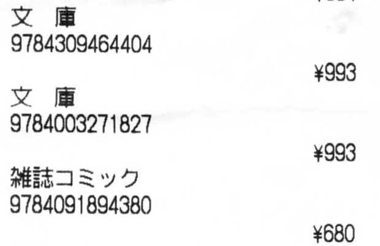

| 画像 | 国会図書館 | Amazon |
|---|---|---|
 左のごとく、書店のレシートには ISBN (を含む文字列) が印字されていることがままある。 そこで先日、ISBN の真ん中の 8 桁を手で入力して Amazon へのリンクを生成できるようにしてみた。 そもそも、積ん読は怖くないがダブりが怖いので、「何を買ったか」を、検索可能な形で、かつローカルに記録できたら嬉しい、というのが動機である。
一方、世の中には Tesseract.js という OCR ライブラリがあるので、レシートの画像そのものから ISBN を認識して、リンクの生成までを自動化することもできそうだな、とも思った。 それを試してみたのがこのページ。 もう少し便利にリンクを生成したいという理由と、Tesseract.js を試してみたいという理由から、作ってみた。
許容可能な文字として数字だけを指定する、('1' の前後に余計な空白文字が入る傾向があったので) その空白文字を削る、'9784' + 数字 9 桁 の部分だけ抽出する、といったごく単純な処理を行うだけで、ありがたいことに書店のレシートの画像ファイルから ISBN を抽出できる。 もちろん多少の誤認識はあるが、Tesseract.js はすごい。
それに、この程度の目的のためなら、特に複雑なオプション設定もいらない (上記のように数字だけを指定してみたが、簡単に指定できた)。 また、認識率を上げるための学習用のデータの作成や、そのデータを使った学習過程なども、不要だった。 使いやすい。
私がテストに使った画像は、グレイスケールモードでスキャンしてできた画像だが、ピンボケしていなければ、カメラで撮った画像でも大丈夫なのではなかろうか。